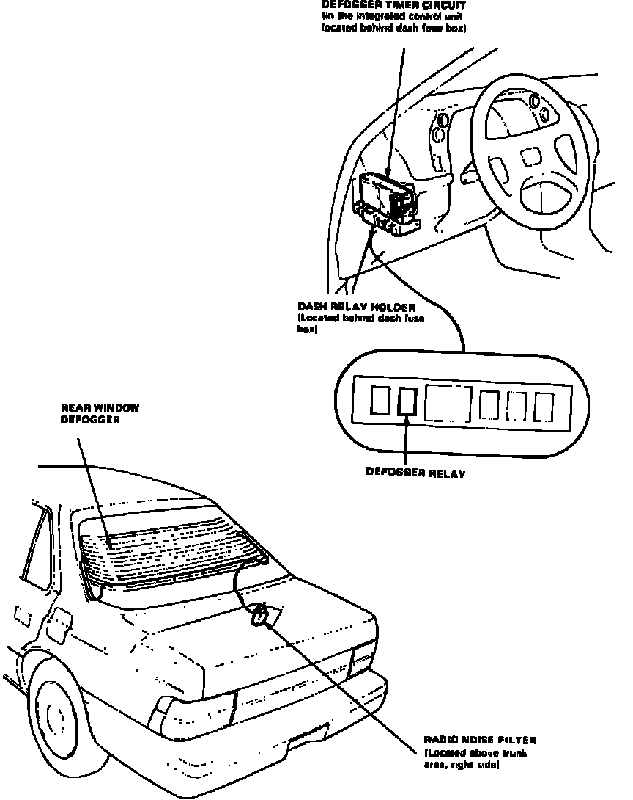

Operation CHARM
: Car repair manuals for everyone.
Home
>>
Acura
>>
1987
>>
Legend Sedan V6-2494cc 2.5L SOHC FI
>>
Repair and Diagnosis
>>
Relays and Modules
>>
Relays and Modules - Windows and Glass
>>
Heated Glass Control Module
>>
Locations
Heated Glass Control Module: Locations
Rear Defogger Timer Circuit
Rear Window Components.:

Behind LH Side Of I/P
Applicable to: 1987 Legend